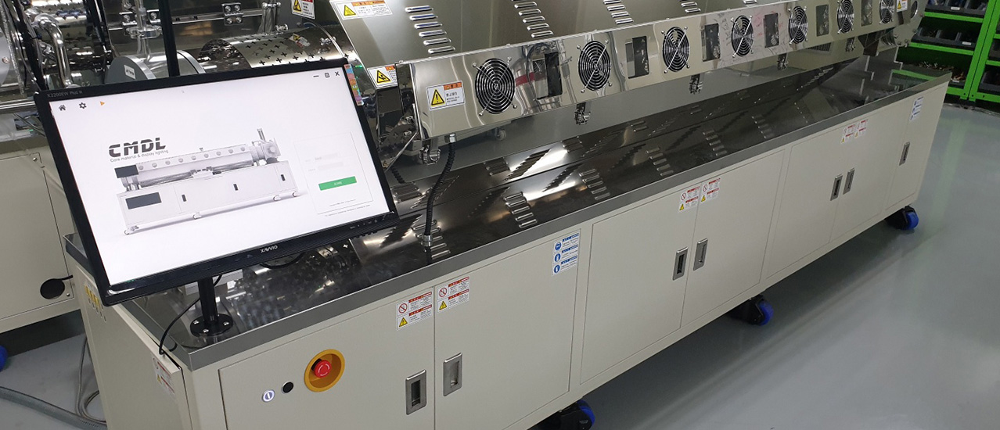
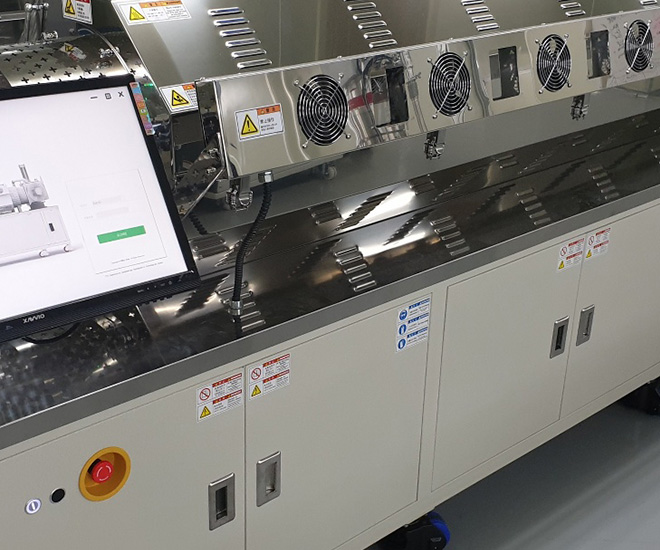
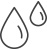
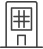
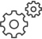

대형장비
Large Size Equipment
 대형 장비는 우리 (주) CMDL 이 최초로 개발한 컨셉으로,
한번에 중형 사이즈 여러대 분량의 물질을 정제할 수 있습니다.
전자재료 대량 생산과 관련하여 고객이 가장 많이 찾는 제품입니다. 대형 장비는 다량의 제품을 생산하는 장비이니 만큼,
승화정제 실패시 손실이 큰 경향이 있습니다. 그래서 대형 장비의 제작에는 보다 많은 장치와 우리 (주) CMDL만의 노하우가 들어 있습니다.
참고로 대형장비는 소형 장비와 같이 사용하면 보다 좋은 성과를 얻을 수 있습니다.
-
(주)CMDL이 최초로
적용한 개념 -

중.대형 스케일
정제 가능 -
전자재료 양산관련
고객이 가장 선호 -

기업 양산 시설에
설치 -

주로 ø300~ø400
준의 장비